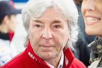

|
Contestant
|
Information
|
Achievements
|
Races
|
Giacomo Agostini
|
- Date of birth: 16 June 1942
- country: Italy
- He was born in Italy on June 16, 1942. He is 80 years old.
As of 2022, the current net worth of Giacomo Agostini is $1-5 Million.
|
Number of participation: 🏆 186
wins: 122 🏅
podiums: 159 🥈
|
-
1980 Aurora AFX British F1 Championship
-
1979 Aurora AFX British F1 Championship
-
1978 European F2 Championship
|
Ángel Nieto

|
- Date of birth: 25 January 1947
- country: Spain
- He is one of the most successful motorcycle racers of all time, with 13 to his name. He retired in 1986 at the age of 39 with a total of 90 Grand Prix victories and 13 World Championships. Known to be superstitious, he prefers to refer to his championship tally as "12+1"
|
Number of participation: 110 🥈
13 🏆 World Championships
gold 90 🏅 Grand Prix victories
|
-
Grand Prix World Championships
-
spanish nation championship
-
1978 European F2 Championship
|
Enea Bastianini
|
- Date of birth: 30 December 1997
- country: Italy
- He was Born in Rimini, Bastianini first rode a minibike aged 3 years and 3 months:
hence his racing number,
33. After a successful career in minibike racing, Bastianini raced successfully in various categories,
including the Honda HIRP Trophy 100cc, the MiniGP 70cc Italian Championship and the Honda RS125 Trophy, where he finished as champion during the 2012 season.[1] In 2013, Bastianini competed in the Red Bull MotoGP Rookies Cup, where he took two victories
en route to a fourth-place finish in the championship. Bastianini also took his first steps in Moto3,
participating in five races of the Italian Championship
|
Number of participation: 88 🥉
1 🏆 World Championships
24 🏅 PodiumsGrand Prix victories
3: 🥈 wins
|
-
2022 Qatar MotoGP
-
2022 Americas MotoGP
-
2022 French MotoGP
|
Miguel Oliveira
|
- Date of birth: 4 January 1995
- country: Portugal
- He is portuguese professional motorcycle racer who compere in The MotoGP World Cgampionship for KTM Factory Racing.
|
Number of participation: 15
2nd 🏆 2015 Championships
|
-
2022 Indonesian MotoGP
-
spanish nation championship
-
1978 European F2 Championship
|
Aleix Espargaro
|
- Date of birth: 30 July 1989
- country: Spain
- He is one of the most successful motorcycle racers of all time, with 13 to his name. He retired in 1986 at the age of 39 with a total of 90 Grand Prix victories and 13 World Championships. Known to be superstitious, he prefers to refer to his championship tally as "12+1"
|
number of participation: 209
0 🏆 World Championships
7 🏅 Podiums
|
-
2022 Argentinian MotoGP
-
spanish nation championship
-
1978 European F2 Championship
|
Francesco Bagnaia
|
- Date of birth: 14 January 1997
- country: Italy
- Francesco Bagnaia is an Italian professional road racer competing in Grand Prix motorcycle racing.
He has an aggressive riding style, brakes hard, and has a lot of corner speed. Racer Francesco is one of the top contenders in the MotoGP World Championship
with his bold riding style.
|
Number of participation: 59
🏆 8 wins
🏅 14 Podiums
|
-
2022 Spanish MotoGP
-
2022 Italian MotoGP
-
2022 Dutch TT MotoGP
|
Fabio Quartararo
|
- Date of birth: 20 April 1999
- country: France
- Having won the 2021 MotoGP World Championship, he is the reigning title holder, and is the first French World Champion in the premier class' history. Prior to his Grand Prix career, Quartararo won six Spanish junior championship titles,
including successive CEV Moto3 titles
in 2013 and 2014.
|
Number of participation : 63
1st 🏆 2021 Championships
11 🏅 wins
26 🥉 podiums
|
-
2022 German MotoGP
-
2022 Catalan MotoGP
-
2022 Portuguese MotoGP
|
Jonathen Rea
|
- Date of birth: 2nd Febuary 1987
- country: Great Britain
- Jonathan Rea OBE (born 2 February 1987) is a Northern Irish professional motorcycle racer.
He competes in the Superbike World Championship and is a six time champion in the series
|
Number of participation: 360
6 🏆 World Championships
231 🏅 Podiums
118: 🥈 wins
|
-
Grand Prix World Championships
-
spanish nation championship
-
1978 European F2 Championship
|